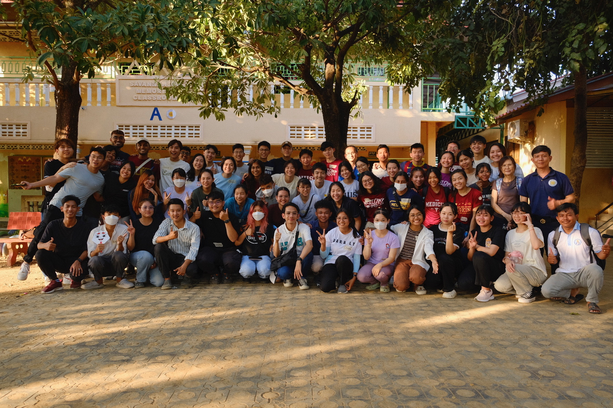
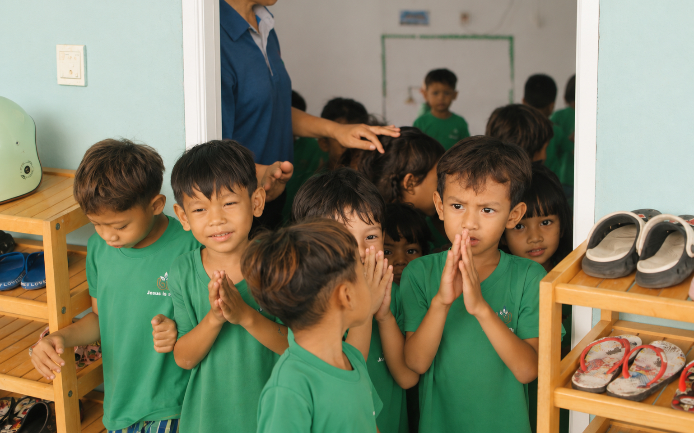
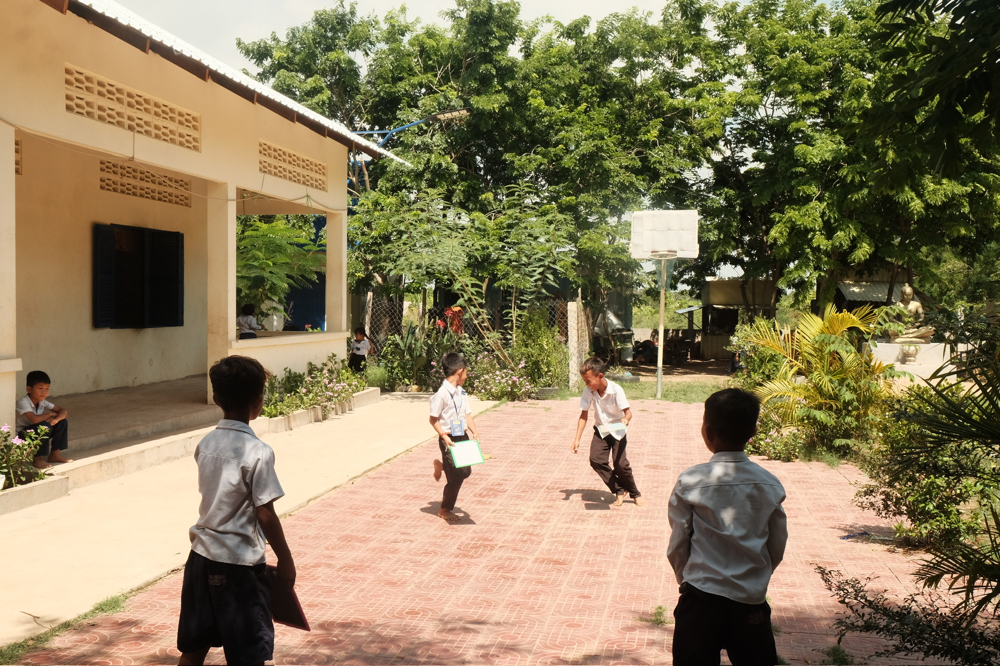

Our Commitment to Healthcare: Bringing accessible medical screening, chronic disease management, and hospital referrals closer to underserved communities in Cambodia.

During our main trip in December 2024, we conducted mass health clinics across three locations in Poipet: Kbal Koh, Tum Nub Kor Phram and Mother of Peace Kindergarten. Over four days, our team screened a total of 1,068 villagers and students for acute illnesses, chronic hypertension, and diabetes.

A key part of Project Battambang's health screening model is ensuring that care does not end at the screening site. Villagers with chronic conditions or complex medical concerns are referred to local healthcare institutions for further assessment, follow-up consultations, and subsidised medication.

Our team includes doctors, medical students, and allied health volunteers, providing comprehensive support across vision care, hearing concerns, physiotherapy needs, chronic disease management, dental consults, vaccinations, and preventive health education.

Following our May 2026 recce trip, our Screening Committee is preparing for December screenings in close consultation with our Cambodian Committee and local partners to build reliable follow-up care and hospital referral continuity.